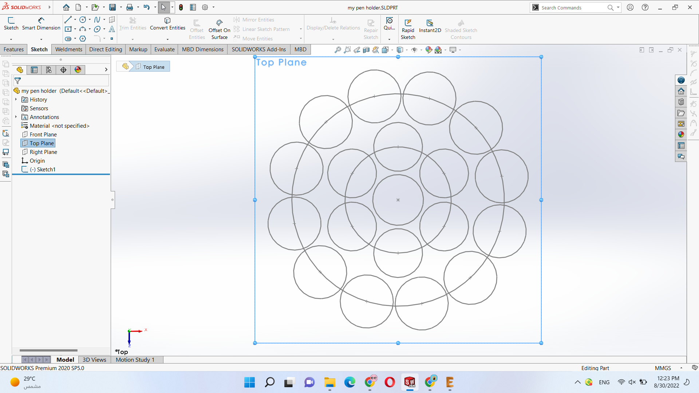

Why Pens Holder !!:
I learned from this diploma that rapid prototyping is used to convert our needs to useful and fun applications in a short period of time .
Actually, in the beginning, I was not restricted to a specific project idea but I used websites such as Thingiverse, GrabCad, and cults to see different projects idea and select one of them until I found this pen holder. I loved the idea of it as My pens are always everywhere in my room and I thought this is the time to stop this and act like a normal person
First trial
when I put this design on Cura with 0.15 layer height and 15% filhin i found that it will take 9 hours and 30 minutes to be prepared.
So I decided to modify on its solid design to rescale it but they were missed. This time Eng Ayman advised me to make a new design on my own to control its scale easily
Design Process
I start my design on solid works by adding the circular profile with the desired pattern as this pic illustrated:
Then I used the Sweep feature with an inside thin feature of 1 mm and I tried to rechange the shape of the holes to be suitable to hold pens well.
After finishing the edits on the design and putting it on cure with the same layer height and infill percentage I found it will take 9 hours and 32 minutes !! So there is no difference between it and the design that I downloaded from thingiverse.

By editing the design more and removing the middle circle the printing time on cura is reduced to 5 hours and 49 minutes.
printing
After Printing the desired design has been successfully ready to use
I hope you use this design and print your holder
Thank you